Fifteen pieces. Each answers exactly one question, and the title is the thing you would type into a search box. No framework essays, no engineering reports.
Every piece comes from our own real incidents — a mis-configured daily loss cap, a trailing stop silently skipped after a restart, stops too tight to survive ordinary noise. Figures carry their scope and sample size; where we cannot stand behind a cause we label it a hypothesis under test.
Risk control only. There are no equity curves here and no claims about outcomes.
Q1
Why a restart can silently disable your trailing stop
Short version: the stop-loss was not modified. After a restart it could never *arm* again — permanently.
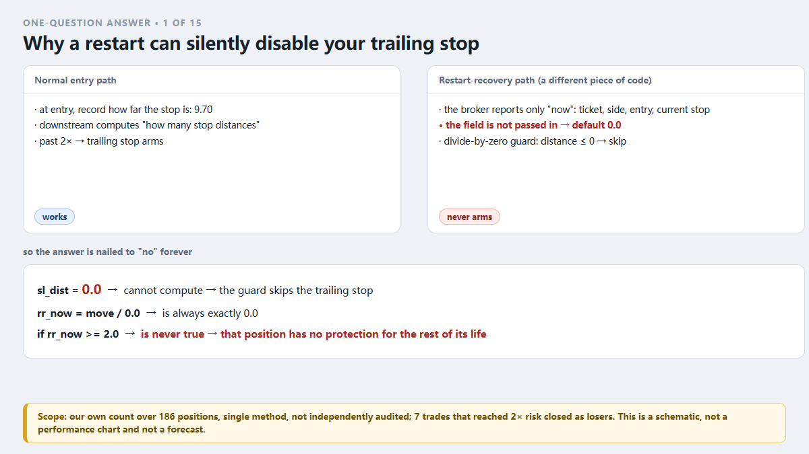
Figure 1: Why a restart can silently disable your trailing stop
A trailing stop is a seatbelt that moves forward on its own. A normal stop sits at a fixed price; a trailing stop follows price as it moves in your favour. It has exactly one job: once the trade is far enough in profit, move the stop up one notch.
In our system that job starts when unrealised profit passes $15 *and* price has travelled more than twice the entry stop distance. Working out "how many stop distances" needs one number: how far the stop was from the entry price when the trade opened.
The failure lived on the restart-recovery path. On startup the bot adopts positions that are still open. The broker will tell you the ticket, direction, entry price, entry time, and where the stop-loss is *now* — it will not tell you where the stop was at entry. It only knows the present.
So the field was never passed in. It fell back to its default: 0.
Then comes the important part. Downstream, dividing by that field would crash the bot, so on 2026-09-10 someone (correctly) added a guard: if the distance is zero or negative, skip the trailing stop. That line saved the process and nailed the answer to "no" forever, because nothing ever goes back and fills the number in.
So: restart once while holding a position, and that position's trailing stop will never run again for the rest of its life.
What it cost — our own count over 186 positions, single method, not independently audited: 7 trades that reached twice their risk closed as losers, and more commonly a trade that reached 2R gave it back down to +1.03R.
Why was the log clean? The code only prints when it *changes* a stop. A position whose trailing stop never armed prints nothing, ever.
This is one of our one-question answers — one question per piece, all taken from our own real incidents. For the rest, search our site for "VigilDesk one-question answers".
Risk note: this is a write-up of our own engineering failure. Figures come from a single real demo account and from static inspection of our own code — small sample, short period. This is not investment advice and cannot be used to infer future results. A risk tool can only bound a single loss; it cannot prevent losses or improve the odds of profit.
Q2
Why our daily loss cap switched itself off
Short version: "written in the config" and "actually running" can be two different numbers, and when they differ it usually does not raise an error.
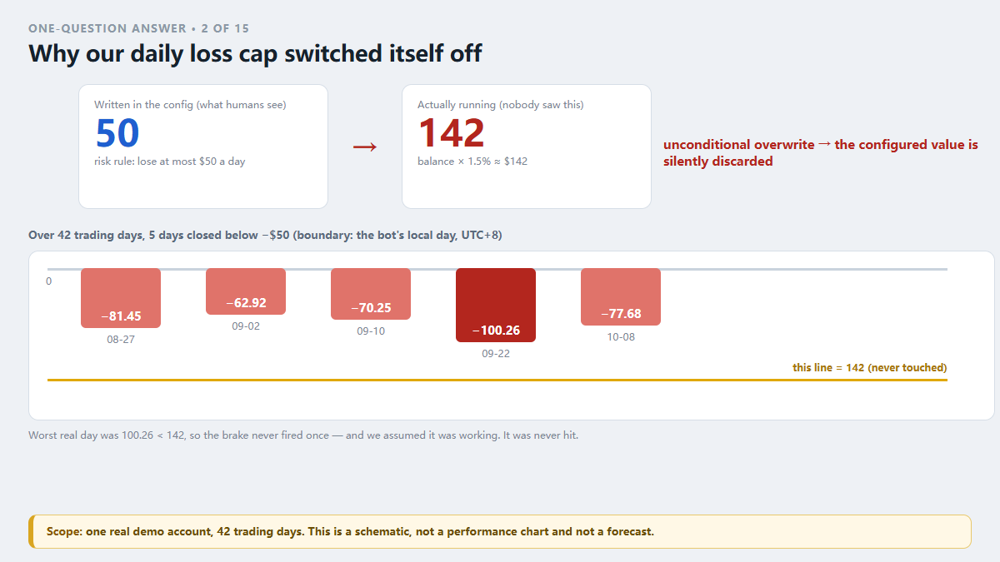
Figure 2: Why our daily loss cap switched itself off
We wrote a rule in our risk file: lose at most $50 a day. Saved. Everything looked fine.
But at startup the program did this: it computed its own number — balance × 1.5% — which came out at about $142, and then unconditionally overwrote the 50 from the rule.
So "lose at most 50 a day" became "lose at most 142 a day". No error log, no warning, no popup. The 50 was still sitting in the config file. Anyone who looked saw 50.
Why did nobody notice for so long? Because the odds of actually losing 142 in one day were tiny. Our worst single day in that stretch was 100.26. 100.26 < 142, so the brake never fired once. And we drew the comfortable conclusion: "the cap is working."
It was not working. It was never hit.
What exposed it was a hit counter. Every risk rule counts its own triggers. One rule's count was 0 — a rule that was supposed to watch the account every day for 42 trading days. Chasing that zero into the code is what surfaced the overwrite.
The real ledger: over 42 trading days, 5 days closed below −50 (day boundary = the bot's own local day, UTC+8): −81.45, −62.92, −70.25, −100.26 (worst), −77.68.
The fix is two lines with one idea: cap = min(balance × 1.5%, the value in the rule) — take the more conservative one. A safety parameter may match the config or be stricter; it must never be quietly loosened.
Part of our one-question-answer series: one question per piece, sourced from our own incidents. The rest are on our site — search "VigilDesk one-question answers".
Risk note: this is a write-up of our own engineering failure. Figures come from a single real demo account and from static inspection of our own code — small sample, short period. This is not investment advice and cannot be used to infer future results. A risk tool can only bound a single loss; it cannot prevent losses or improve the odds of profit.
Q3
Why a stop that is too tight gets swept by ordinary noise
Short version: most of the time you are not beaten by price running hard against you. You are beaten by the market's ordinary breathing.
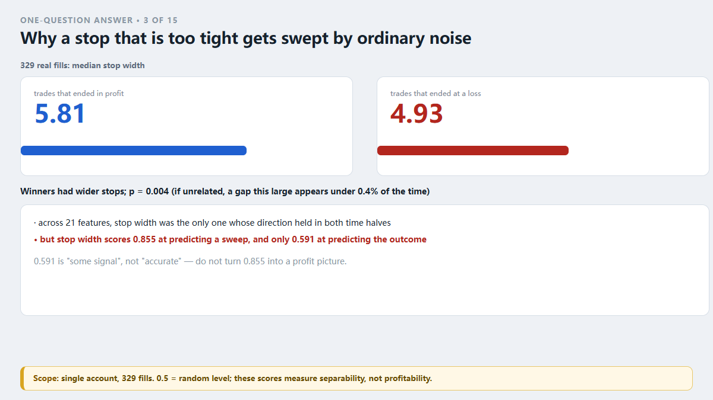
Figure 3: Why a stop that is too tight gets swept by ordinary noise
Picture a train station. You tie your suitcase to your wrist so nobody takes it — but you leave only 30 cm of rope. The person next to you shifts one step and turns around, and the rope snaps. They did not rob you. They did not even notice you. The rope was too short.
We ran a plain comparison over 329 of our own real fills: does "did this trade end up or down" relate to "how wide was the stop"?
Median stop width:
trades that ended in profit: $5.81
trades that ended at a loss: $4.93
Winners had wider stops. The difference is significant: p = 0.004 — if stop width were unrelated, a gap this large would show up less than 0.4% of the time.
(We compared 21 features. Stop width was the only one whose direction held in both time halves. The others looked useful until the period changed.)
How often does the sweep happen? 112–114 trades were stopped out within 5 minutes of entry (the two figures differ by ledger time basis, not by conclusion). About one trade in three did not survive five minutes.
⚠️ One limit has to be stated or the numbers get misread: stop width scores 0.855 at predicting whether a trade gets swept, but only 0.591 at predicting profit or loss.
Do not turn the first number into a profit picture. The 5.81 / 4.93 gap says losers had tighter stops. It does not say widening a stop makes money.
One of our one-question answers — a single question per piece, from our own incidents. More are collected on our site: search "VigilDesk one-question answers".
Risk note: this is a write-up of our own engineering failure. Figures come from a single real demo account and from static inspection of our own code — small sample, short period. This is not investment advice and cannot be used to infer future results. A risk tool can only bound a single loss; it cannot prevent losses or improve the odds of profit.
Q4
Why "it bounced, so I added" is the most expensive move you make
Short version: it rewrites "one small loss with a boundary" into "one loss with no boundary".
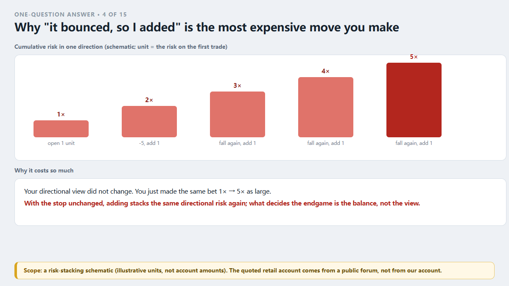
Figure 4: Why "it bounced, so I added" is the most expensive move you make
Adding to a position is not wrong by itself. It is wrong after a loss, in order to average down, because the move you are making is: stack the same directional risk one more time.
Plain arithmetic. You open 1 lot with a 10-point stop. Your worst case on that trade is 10 points. Price drops 5 points and you add 1 lot, keeping the same stop price. If the stop is hit now, your realised loss is 15 points, not 10. Your directional view did not change. You just made the same bet one and a half times as large.
And the market's favourite shape is exactly the one that bounces first — long enough to confirm your add — and then resumes.
Someone in a trading forum wrote his own version down (2026-10-09, quoted verbatim): bought at 48, "thought that was the bottom"; at 35, "thought that was the iron floor, doubled my position"; at 24, "thought it could not go lower, doubled again"; at 16, "thought we had reached hell, doubled again"; at 10.78, "no money left, did not dare add".
Four adds. Every one had a reason. Every one doubled the risk. By the last rung, what decided his outcome was not his judgement — it was his balance.
Our own account carries a manual trade whose loss is more than four times the bot's worst single loss (−$53.99). The bot did not place that one.
The rule that follows is one sentence: do not cap each trade; cap total risk per direction. After any add, recompute directional exposure, and refuse the add if it breaches the cap.
This is one of our one-question answers — one question per piece, all taken from our own real incidents. For the rest, search our site for "VigilDesk one-question answers".
Risk note: this is a write-up of our own engineering failure. Figures come from a single real demo account and from static inspection of our own code — small sample, short period. This is not investment advice and cannot be used to infer future results. A risk tool can only bound a single loss; it cannot prevent losses or improve the odds of profit.
Q5
After a restart, which settings quietly revert to default?
Short version: everything held only in memory. When a program rebuilds a position object, every field is a chance to lose one.
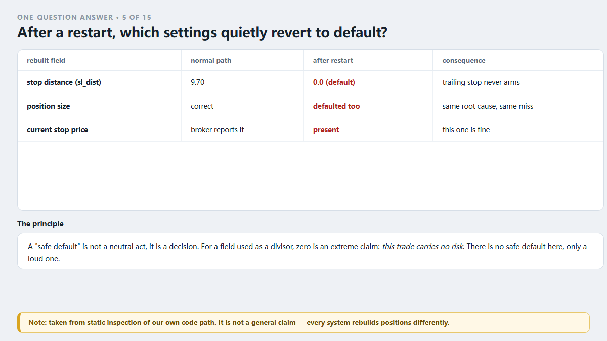
Figure 5: After a restart, which settings quietly revert to default?
Our case was textbook. On startup the bot adopts open positions so it can keep managing them. To do that it constructs the position object again. The broker only holds present facts: ticket, direction, entry price, entry time, current stop price.
The broker does not know how far the stop was at entry, and does not know how much that trade was allowed to lose. Both numbers live only in our memory.
Result:
stop distance not passed in → default 0 → trailing stop permanently disabled
position size not passed in either → also defaulted
One principle is worth keeping: a "safe default" is not a neutral act, it is a decision. For a field used as a divisor, zero is not "no information" — it is an extreme claim: *this trade carries no risk*. There is no safe default here, only a loud one. If the value is genuinely unknown, the honest options are: refuse to adopt the position and say so out loud, or look the value up.
We chose the second. On restart the bot now looks the original stop distance up in its own trade ledger by ticket number, and falls back to the old cautious behaviour only if the lookup fails. The missing position size was restored in the same change.
A 30-second self-check you can run today: restart your program while holding a position, then look at whether the log prints that position's key fields — stop distance, entry price, current stop.
Whichever field reads 0 or empty, the feature that depends on it is dead right now.
Part of our one-question-answer series: one question per piece, sourced from our own incidents. The rest are on our site — search "VigilDesk one-question answers".
Risk note: this is a write-up of our own engineering failure. Figures come from a single real demo account and from static inspection of our own code — small sample, short period. This is not investment advice and cannot be used to infer future results. A risk tool can only bound a single loss; it cannot prevent losses or improve the odds of profit.
Q6
One parameter, two places: which one wins?
Short version: the value read at runtime wins — and it usually does not tell you which value that was.
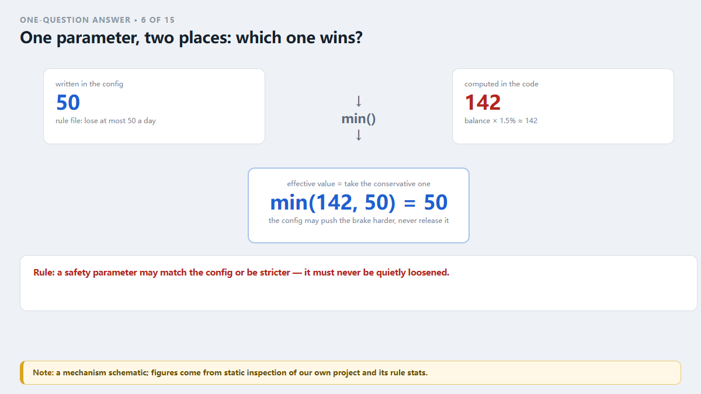
Figure 6: One parameter, two places: which one wins?
Our case: the risk rule file says "lose at most $50 a day". At startup the program computes "balance × 1.5%" ≈ $142 and unconditionally overwrites the rule value. Both places have a value. The values differ. The 50 is still in the config file, and anyone who opens it sees 50.
This was not a lost config, and not the wrong file being read. A piece of code deliberately discarded the configured value. And it did not consider that an anomaly — overwriting counted as *normal logic*, so nothing was ever logged.
So what do you do? We ended up with exactly one rule:
A safety parameter may match the config or be stricter. It must never be quietly loosened.
In code that means taking the conservative side: cap = min(balance × 1.5%, value from the rule). Now even if someone changes the balance ratio later, the configured 50 remains the ceiling — the config can only push the brake harder, never release it.
One more, equally important: print the effective value at startup. Not the configured value — the number the program actually read. If you do not see it printed, treat it as not applied.
Worth being explicit about the danger. It is not that the number was wrong. It is that the wrongness was invisible. Config correct, log clean, no exception — three green signals. Only the actual fills can prove which number was running.
One of our one-question answers — a single question per piece, from our own incidents. More are collected on our site: search "VigilDesk one-question answers".
Risk note: this is a write-up of our own engineering failure. Figures come from a single real demo account and from static inspection of our own code — small sample, short period. This is not investment advice and cannot be used to infer future results. A risk tool can only bound a single loss; it cannot prevent losses or improve the odds of profit.
Q7
A risk rule with zero hits: good news or bad?
Short version: treat it as a lead. Do not treat it as good news.
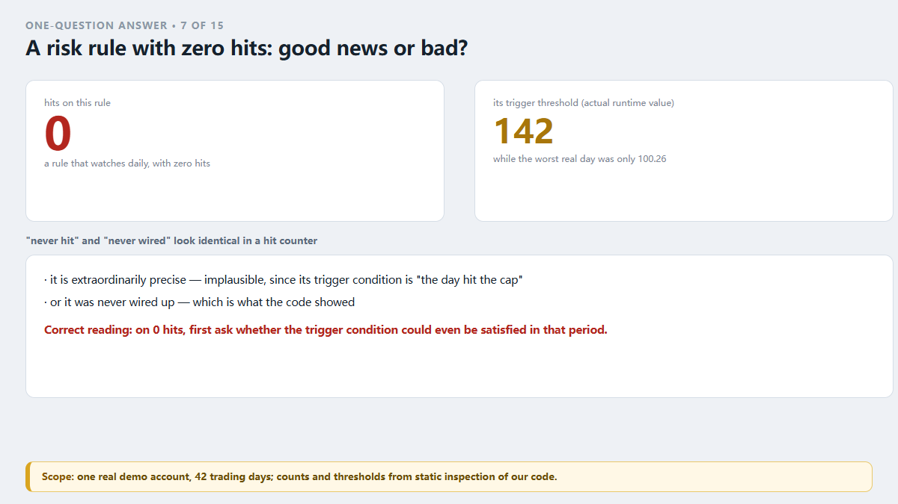
Figure 7: A risk rule with zero hits: good news or bad?
Every risk rule of ours keeps a hit count. Going through the stats, one rule's count was 0 — not "rare", zero. The rule was the daily loss cap. It was supposed to watch the account every day for 42 trading days.
A rule that watches daily and fires zero times means one of two things:
It is extraordinarily precise — implausible here, because its trigger condition *is* "the day hit the cap";
It was never wired up.
Following that zero into the code gave the second answer: the configured cap was $50, the runtime cap had been overwritten to about $142, and our worst single day in that stretch was 100.26. 100.26 < 142, so it never fired.
The lesson is worth more than the bug: "never hit" and "never wired" look identical in a hit counter.
So the correct reading is not "0 hits = never triggered = fine". It is:
On seeing 0 hits, ask: could its trigger condition even be satisfied in the period I am looking at?
Concretely: compute its threshold, then run your real fills against it. Was there any day, any trade, that actually crossed the line? If the line was crossed and the count is still 0, the rule is dead.
That is exactly how we found ours. The question was "did any day lose more than $50?" The answer was five days.
This is one of our one-question answers — one question per piece, all taken from our own real incidents. For the rest, search our site for "VigilDesk one-question answers".
Risk note: this is a write-up of our own engineering failure. Figures come from a single real demo account and from static inspection of our own code — small sample, short period. This is not investment advice and cannot be used to infer future results. A risk tool can only bound a single loss; it cannot prevent losses or improve the odds of profit.
Q8
Why "no errors in the log" is not evidence the guard is running
Short version: a clean log is the default state of a healthy system and of a dead one.
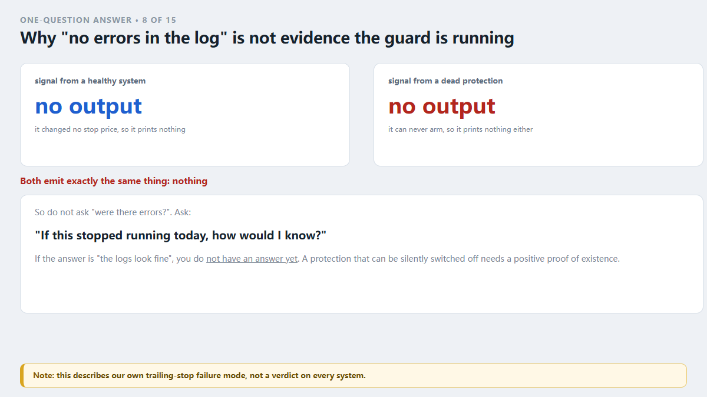
Figure 8: Why "no errors in the log" is not evidence the guard is running
When our trailing stop failed, the natural question was: the log has no errors, so how can it be broken?
The catch is that the code only prints when it changes a stop price. A position whose trailing stop never armed prints nothing, ever. And the reason it could not arm was a guard added for robustness: if the distance is zero or negative, skip.
Look at the shape of that. "Skip" was a deliberate behaviour, considered correct at the time. The program did not think it was doing anything wrong, so it never complained.
That is the most expensive class of failure, because it emits exactly the same signal as normal operation: none.
So the question to ask about any guard is not "were there errors?" It is:
If this stopped running today, how would I know?
If the answer is "the logs look fine", then you do not have an answer yet.
We now give every cap, breaker and rule a hit counter. The reasoning is blunt: a protection that can be silently switched off needs a positive proof of existence. A guard with zero hits over dozens of trades is not "quiet" — it is a finding.
One aside: the way this bug was originally "fixed" deserves suspicion too. The guard replaced an exception with a quiet success — and that exception was the only thing telling anyone the situation existed.
Part of our one-question-answer series: one question per piece, sourced from our own incidents. The rest are on our site — search "VigilDesk one-question answers".
Risk note: this is a write-up of our own engineering failure. Figures come from a single real demo account and from static inspection of our own code — small sample, short period. This is not investment advice and cannot be used to infer future results. A risk tool can only bound a single loss; it cannot prevent losses or improve the odds of profit.
Q9
Does stop width actually relate to the outcome?
Short version: yes — but the useful part is not the part we assumed. Not "guessing direction". Stop width.
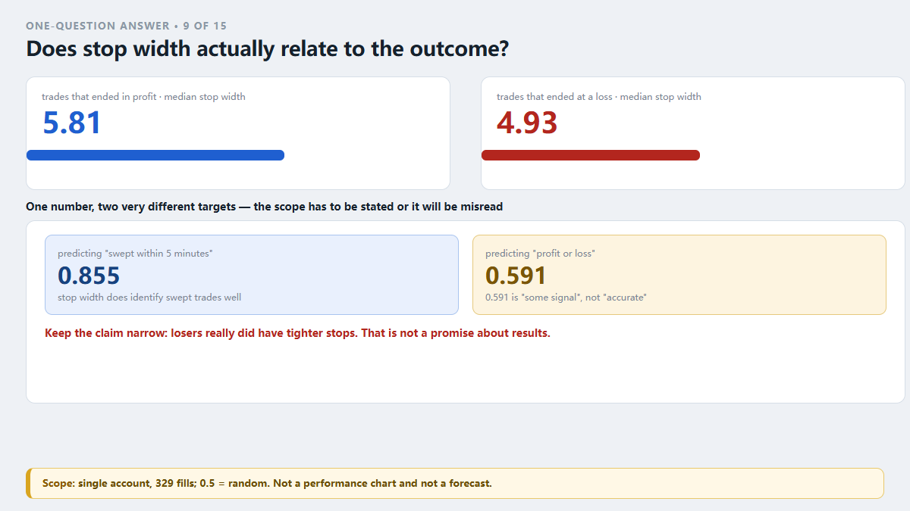
Figure 9: Does stop width actually relate to the outcome?
We ran a plain comparison over 329 of our own real fills, split into trades that ended in profit and trades that ended at a loss, looking at median stop width (distance from entry to the initial stop):
trades that ended in profit: $5.81
trades that ended at a loss: $4.93
Winners had wider stops. Significance: p = 0.004 — if stop width were unrelated to outcome, a gap this large would appear less than 0.4% of the time.
Across 21 features, stop width was the only one whose direction held in both time halves. Others looked promising until the period changed.
The scope matters, or the numbers get misread:
stop width predicting whether a trade gets swept within 5 minutes: 0.855
the same number predicting final profit or loss: 0.591
0.591 is "some signal", not "accurate". The 0.855 speaks to whether a trade gets swept. It says nothing about whether it will make money.
For context, the classic technical indicators we tested scored 0.487–0.496 at predicting direction — below 0.50, i.e. worse than a coin flip.
So the claim here is deliberately narrow: losers really did have tighter stops; that gap is real. It is not a promise about results. Widening a stop only reduces how often ordinary noise takes you out.
One of our one-question answers — a single question per piece, from our own incidents. More are collected on our site: search "VigilDesk one-question answers".
Risk note: this is a write-up of our own engineering failure. Figures come from a single real demo account and from static inspection of our own code — small sample, short period. This is not investment advice and cannot be used to infer future results. A risk tool can only bound a single loss; it cannot prevent losses or improve the odds of profit.
Q10
Why my trades do not survive five minutes
Short version: about one trade in three is stopped out within five minutes of entry.
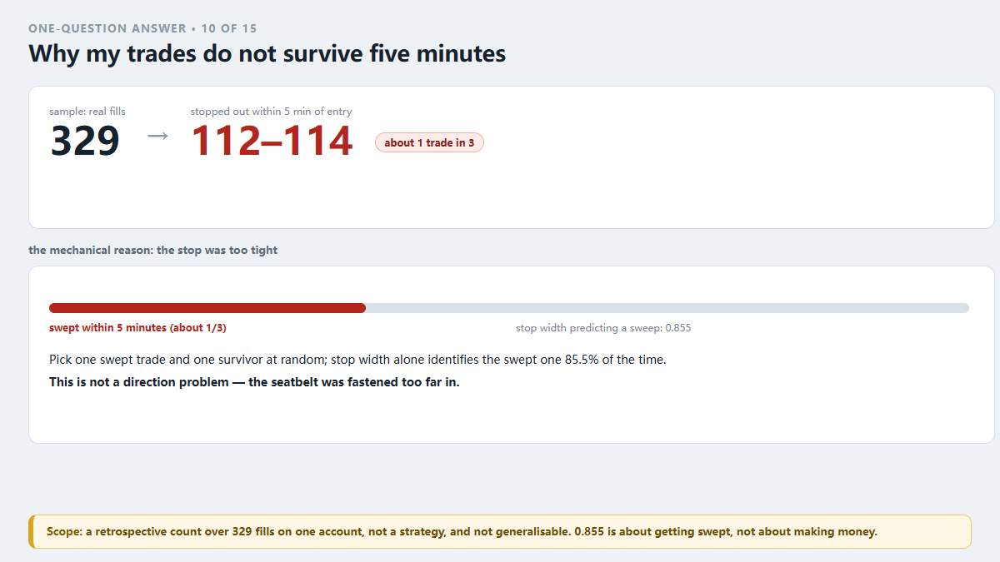
Figure 10: Why my trades do not survive five minutes
Over 329 of our own real fills: 112–114 were stopped out within 5 minutes of entry (the two figures differ by ledger time basis, not by conclusion).
Those trades summed to roughly −$575 net. The trades that survived past 5 minutes summed to +$736.
The 5-minute line separates the two groups cleanly.
Read the scope carefully: this is a retrospective count, not a strategy. It says that in *this* sample the under-5-minute group and the over-5-minute group summed to different signs. It does not say every trade that lives past five minutes makes money. One account, 329 fills — not generalisable.
So why did they not survive? The data points at something mechanical: the stops were too tight. Using stop width alone to predict *whether a trade gets swept within 5 minutes* scores 0.855 — pick one swept trade and one survivor at random, and stop width alone identifies the swept one 85.5% of the time.
That is a rope shouting: "look at me, I am too short."
Next time a trade gets swept "for no reason", measure one thing before blaming the market: how much bigger is your stop distance than the market's ordinary noise? If it is smaller than normal fluctuation, it is not a stop — it is a fee you are donating to the market.
(Reminder: 0.855 measures *whether it gets swept*, not *whether it makes money*. The same number scores 0.591 on profit and loss.)
This is one of our one-question answers — one question per piece, all taken from our own real incidents. For the rest, search our site for "VigilDesk one-question answers".
Risk note: this is a write-up of our own engineering failure. Figures come from a single real demo account and from static inspection of our own code — small sample, short period. This is not investment advice and cannot be used to infer future results. A risk tool can only bound a single loss; it cannot prevent losses or improve the odds of profit.
Q11
We set a minimum stop distance. Why was it still breached?
Short version: because setting a rule and holding a rule are two different jobs, and we had only done the first.
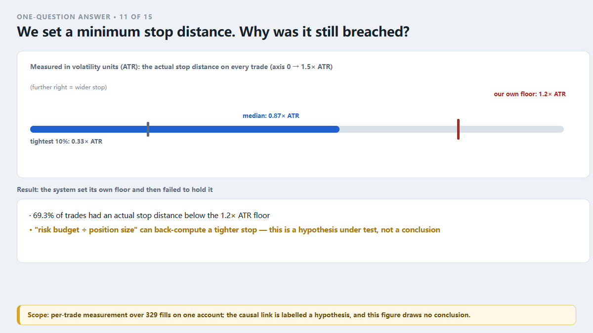
Figure 11: We set a minimum stop distance. Why was it still breached?
Our system carries an explicit floor: stop distance must not be less than 1.2× the volatility range (ATR). The system knows tight stops are bad.
The real fills say otherwise:
69.3% of trades had an actual stop distance below that floor
median: 0.87× ATR
the tightest 10%: 0.33× ATR
The system set its own floor and then failed to hold it.
How does that happen? The stop distance is not written down directly — it is computed: risk budget for the trade ÷ position size = the stop distance you are allowed. That computed figure can come out tighter than 1.2× ATR, and somewhere along the chain it was let through. The floor became a sentence nobody enforced.
⚠️ Let me label the causality honestly: this is a hypothesis under test, not a conclusion. What we can confirm is the fact (69.3% below the floor) and the statistical relationship (tighter stops get swept by ordinary noise). "The risk-budget back-calculation squeezed the floor" is our inference about the chain, not yet verified point by point.
So the one action you can take today: go to your fills and measure the actual stop distance on every trade. Count how many breached the floor you set.
Do not go read what the rule file says — that only proves you thought about it. Only the fills prove whether it held.
Part of our one-question-answer series: one question per piece, sourced from our own incidents. The rest are on our site — search "VigilDesk one-question answers".
Risk note: this is a write-up of our own engineering failure. Figures come from a single real demo account and from static inspection of our own code — small sample, short period. This is not investment advice and cannot be used to infer future results. A risk tool can only bound a single loss; it cannot prevent losses or improve the odds of profit.
Q12
Does the entry point matter? Ours says: barely.
Short version: in our own data, where you buy barely moves the result. How much you can lose does.
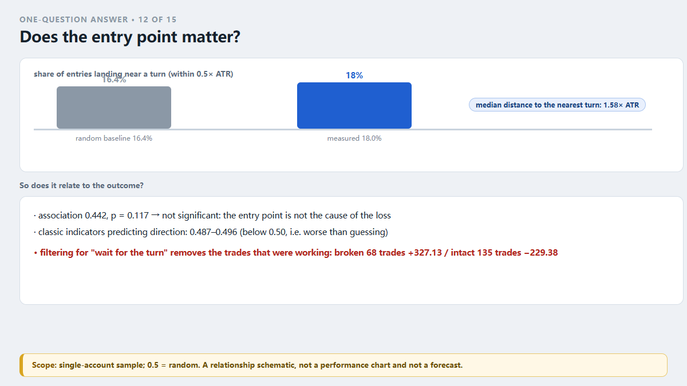
Figure 12: Does the entry point matter? Ours says: barely.
We spent a long time on "how do we enter more accurately". Three independent analyses said the same thing: classic technical indicators scored 0.487–0.496 at predicting direction — below 0.50, i.e. worse than guessing.
(0.50 is a coin flip. Below 0.50 is worse than a coin flip.)
So we asked a question closer to how traders actually talk: does the distance from the entry to the nearest swing point relate to whether the trade ends up or down?
association: 0.442, p = 0.117 — not statistically significant
in other words: the entry point is not the cause of the loss
An observation did hold up, though: most entries really do happen mid-move. Median distance from entry to the nearest swing point was 1.58× ATR, and only 18.0% of entries landed within 0.5× ATR of a turn (random baseline 16.4%).
But that is not an explanation for the losses. We also tested the obvious idea — "wait for a turn before entering" — and got: trades where the swing level had already broken: 68 trades, +$327.13. Trades where it was intact: 135 trades, −$229.38. Filtering for "wait for the turn" throws away the trades that were making money.
Conclusion: move effort from guessing direction to managing loss. Direction is not ours to control. How much we lose is the only part that is.
One of our one-question answers — a single question per piece, from our own incidents. More are collected on our site: search "VigilDesk one-question answers".
Risk note: this is a write-up of our own engineering failure. Figures come from a single real demo account and from static inspection of our own code — small sample, short period. This is not investment advice and cannot be used to infer future results. A risk tool can only bound a single loss; it cannot prevent losses or improve the odds of profit.
Q13
How do you pick your "max loss per day" number?
Short version: pick it from your own money, not from your mood.
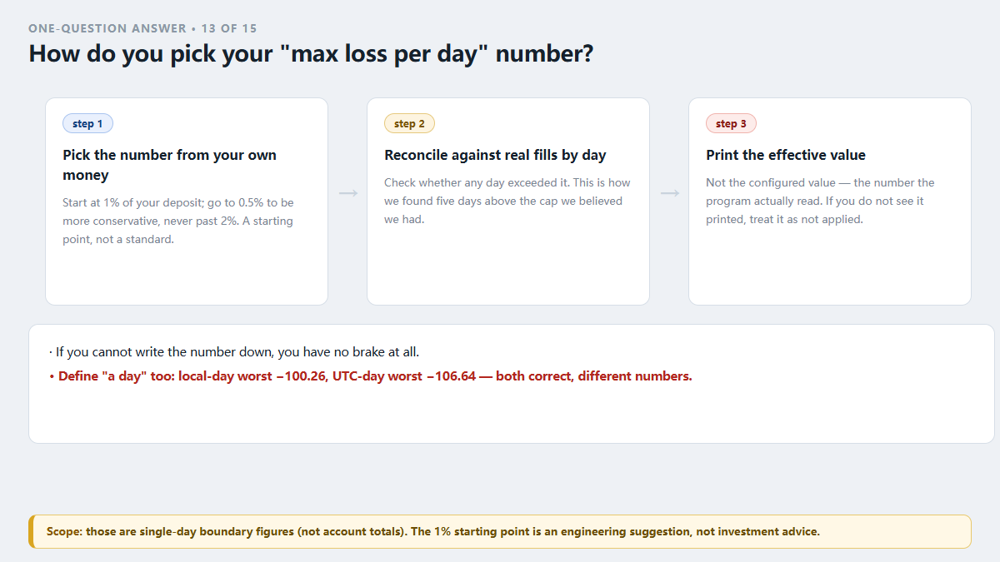
Figure 13: How do you pick your "max loss per day" number?
This is the most important step and the one most often skipped — because if you cannot write the number down, you have no brake at all.
How: take your deposit and use 1% of it. A $20,000 deposit gives $200.
Why 1%: it is a starting point, not a standard. Its value is that it is anchored to your money rather than to "how much I feel I can take today". Go to 0.5% if you want to be more conservative. Do not go past 2%.
Then do the part that actually matters:
Take your recent fills, aggregate them by day, and check whether any day exceeded that number.
That is the step that showed us five days above the cap we believed we had (worst: −$100.26). Without that reconciliation you will never know whether your brake is working or was never connected.
⚠️ Two traps, both ours:
"Written in the config" is not "running in the program". Our config said 50; the code ran balance × 1.5% ≈ 142. Those can differ, and when they differ it usually raises no error. So after writing the number down, print it in the log and confirm the program read the value you typed.
Define what "a day" means before you quote any daily figure. Our risk day is the local day (UTC+8). Change the boundary and the same fills produce a different worst day — in our data, the local-day worst was −100.26 and the UTC-day worst was −106.64. State the boundary before quoting any "daily" number.
This is one of our one-question answers — one question per piece, all taken from our own real incidents. For the rest, search our site for "VigilDesk one-question answers".
Risk note: this is a write-up of our own engineering failure. Figures come from a single real demo account and from static inspection of our own code — small sample, short period. This is not investment advice and cannot be used to infer future results. A risk tool can only bound a single loss; it cannot prevent losses or improve the odds of profit.
Q14
The risk rule shipped. Why can trades still slip past it?
Short version: because a gate usually covers one order path, and your system has more than one.
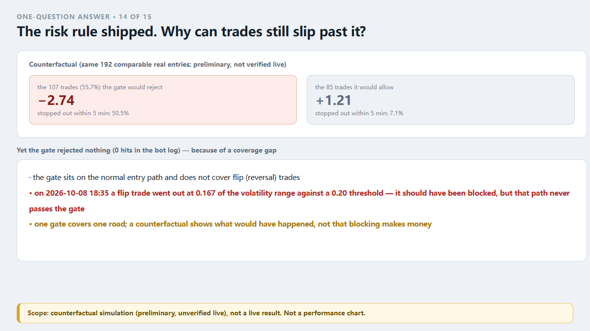
Figure 14: The risk rule shipped. Why can trades still slip past it?
We shipped a "stop-width gate": do not open trades whose stop is too tight. Rule written, switch on.
After it went live, its hit count in the bot log was 0 — not one rejection. Only 8 trades filled in that window, so "0 hits" alone was not yet damning. So we ran a counterfactual (same 192 comparable real entries):
the 107 trades (55.7%) the gate would have rejected: −$2.74 expected per trade, 50.5% stopped out within 5 minutes
the 85 trades it would have allowed: +$1.21 expected per trade, 7.1% stopped out within 5 minutes
A large separation. And the gate rejected nothing.
The real cause was a coverage gap: the gate sits on the normal entry path and does not cover flip (reversal) trades. On 2026-10-08 at 18:35 a flip trade went out with a stop of 0.167 of the volatility range against a 0.20 threshold. By the rule it should have been blocked — but that path never passes through the gate.
Three plain sentences follow:
One gate covers one road. How many entry points does your system have? Ask of each: is this gate on that road?
"Shipped" is not "working". The evidence is a hit count plus a counterfactual — not the presence of a line of code.
A counterfactual is not a live result. Those numbers are a simulation (preliminary, unverified live). They show what *would* have happened, not that blocking those trades makes money.
Part of our one-question-answer series: one question per piece, sourced from our own incidents. The rest are on our site — search "VigilDesk one-question answers".
Risk note: this is a write-up of our own engineering failure. Figures come from a single real demo account and from static inspection of our own code — small sample, short period. This is not investment advice and cannot be used to infer future results. A risk tool can only bound a single loss; it cannot prevent losses or improve the odds of profit.
Q15
When you total up daily losses, where does your "day" start?
Short version: change the day boundary and the same fills produce a different "worst day".
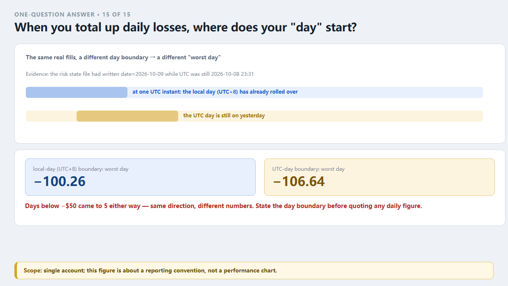
Figure 15: When you total up daily losses, where does your "day" start?
We got burned by this twice, so it gets its own entry.
Our bot has a concept of a risk day. It uses the local day (UTC+8) to decide whether "today" has lost money. The evidence: the risk state file had already written date=2026-10-09 while UTC was still 2026-10-08 23:31.
The same real fills:
local-day boundary: worst day −$100.26
UTC-day boundary: worst day −$106.64
Days below −$50: five either way — same direction, different numbers.
Why it matters:
It changes your judgement about your own brake. The day you think was your worst may not be.
It makes your review disagree with your fills. You aggregate by calendar day; the program judges by its local day. The two "todays" can be hours apart.
It makes two analysts disagree. We had exactly that: one reported −100.26, another −106.64. Both were right — different boundaries, nobody had written down which.
So there is one rule: state the day boundary before quoting any daily figure.
A sibling problem: fill timestamps have a basis too. In our ledger, the signal time is 0–85 seconds earlier than the broker's actual fill (median 51 seconds), and the recorded close time runs 99 seconds to 98 minutes later than the real close.
So when you compute holding time, entry time of day, or session, use the broker's execution time. Using ledger time makes holding periods look longer than they were.
One of our one-question answers — a single question per piece, from our own incidents. More are collected on our site: search "VigilDesk one-question answers".
Risk note: this is a write-up of our own engineering failure. Figures come from a single real demo account and from static inspection of our own code — small sample, short period. This is not investment advice and cannot be used to infer future results. A risk tool can only bound a single loss; it cannot prevent losses or improve the odds of profit.